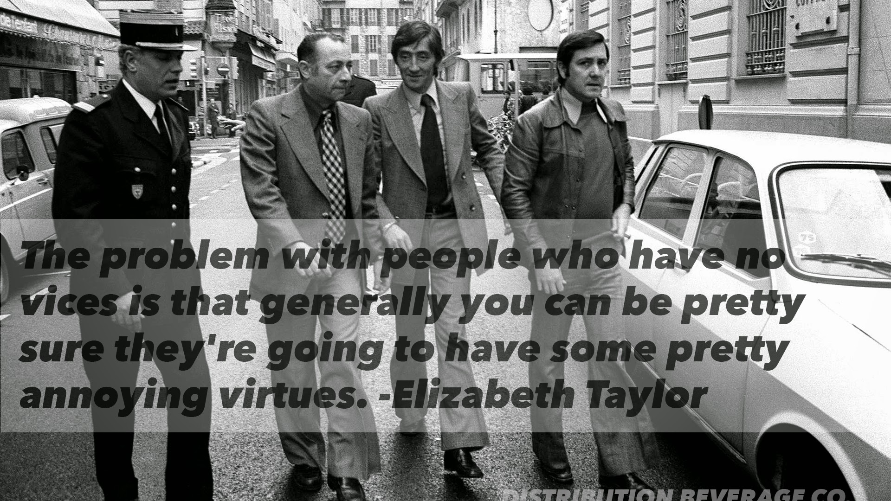

A New Kansas City Landmark
We are building Kansas City's most beloved botanical garden—a living sanctuary of beauty, science, and community rooted in the heart of our city.
We are a nonprofit dedicated to creating a transformative botanical garden that serves every Kansas Citian—a place of wonder, education, and healing that is free and accessible to all.
Great cities are defined by their great public spaces. From New York's Central Park to Chicago's Millennium Park, these green anchors become the soul of a city. Kansas City's botanical garden will be that place—a destination that draws visitors from across the region while serving as an everyday refuge for our neighbors.
Preserving native plants and biodiversity for future generations.
Programs for students, families, and lifelong learners.
A free, welcoming space for every Kansas Citian to call their own.
“A botanical garden is not a luxury—it is an essential act of hope for a city and its people.”— Kansas City Botanical Garden, Founding Vision
Designed by world-class landscape architects, our garden will be a mosaic of curated landscapes, each telling a unique story of the plant world.
Sweeping meadows of native wildflowers and grasses celebrating the iconic tallgrass prairies of the Midwest. A living tribute to our regional heritage.
A stunning glass-and-steel pavilion housing rare tropical specimens—a year-round escape to rainforests and cloud forests from around the world.
An immersive, hands-on wonderland where children dig, grow, and explore the natural world—sparking a lifelong love of plants and science.
A meditative landscape of sculpted stone, reflecting pools, and seasonal blossoms offering a serene retreat at any time of year.
Hundreds of rose varieties alongside fragrant herbs and textured plantings, designed to delight all five senses and welcome visitors of all abilities.
A boardwalk winding through restored wetlands teeming with native water plants, amphibians, and migratory birds—a vital conservation corridor.
Full-time, part-time, and seasonal positions rooted in our community.
Free field trips and STEM programming for Kansas City school children.
Estimated annual regional economic contribution through tourism and events.
Always free to all Kansas City residents—because beauty belongs to everyone.
Every contribution—of any size—brings us closer to breaking ground. Choose your level of impact and become a founding supporter of Kansas City's botanical garden.
Plant the seed. Your gift funds native plant materials and helps establish our seed bank for the prairie garden.
Help us grow. Your gift sponsors a sapling tree on our main promenade, where it will stand for generations to come.
Create a lasting grove. Your gift funds a cluster of native trees and a commemorative marker in the woodland walk.
Become a pillar of the garden. Major gifts fund named benches, garden features, and help us reach our capital campaign goals.
Want to give a different amount, donate stock, or discuss a major gift?
Contact Us About GivingJoin our founding volunteer corps. Help with community outreach, events, garden workdays, and more as we build toward opening day.
Sign up to volunteer →Align your brand with one of Kansas City's most exciting new institutions. Custom sponsorship packages available for businesses of all sizes.
Explore sponsorships →Share our vision with your network. Every conversation, social share, and introduction to a potential donor moves us closer to breaking ground.
Stay connected →